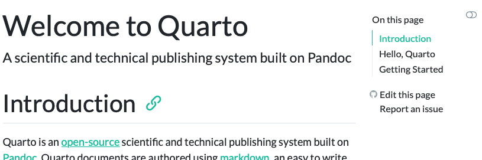
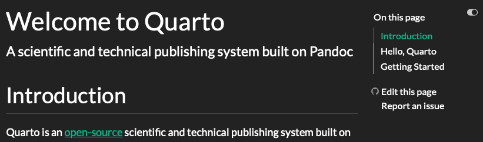

HTML Theming
Overview
HTML documents rendered with Quarto use Bootstrap 5 by default. This can be disabled or customized via the theme option:
theme: default # bootstrap 5 default
theme: cosmo # cosmo bootswatch theme
theme: pandoc # pandoc default html treatment
theme: none # no theme css added to documentQuarto includes 25 themes from the Bootswatch project (for example, the website uses the cosmo theme). Below we describe how to use SASS to create your own themes.
Basic Options
Pandoc supports a set of basic metadata options for customizing document appearance without directly using CSS. These options are available for both the pandoc theme as well as for all Bootstrap themes.
If you are using a Bootstrap theme or the Pandoc theme, there are a set of options you can provide in document metadata to customize its appearance. These include:
| Option | Description |
|---|---|
max-width |
The maximum width occupied by page content. Defaults to 1400px for bootstrap themes and 36em for the pandoc theme. |
mainfont |
Sets the font-family property for the document. |
fontsize |
Sets the base CSS font-size for the document. |
fontcolor |
Sets the default text color for the document. |
linkcolor |
Sets the default text color for hyperlinks. |
monofont |
Sets the font-family property for <code> elements. |
monobackgroundcolor |
Sets the background-color property for <code> elements. |
linestretch |
Sets the CSS line-height property (affects distance between lines of text, defaults to 1.5). |
backgroundcolor |
Sets the background-color for the document. |
margin-left, margin-right, margin-top, margin-bottom |
Sets the CSS margin properties for the document body. |
For example. here we set the font-size a bit larger and specify that we want a bit more space between lines of text:
title: "My Document"
format:
html:
theme: cosmo
fontsize: 1.1em
linestretch: 1.7Theme Options
While the basic customization described above handles many common requirements, you can do extensive additional customization using SASS theme files. Bootstrap defines over 1,400 variables that control fonts, colors, padding, borders, and much more. You can see all of the variables here:
https://github.com/twbs/bootstrap-sass/blob/master/assets/stylesheets/bootstrap/_variables.scss
SASS theme files can define both variables that globally set things like colors and fonts, as well as rules that define more fine grained behavior. To customize an existing Bootstrap theme with your own set of variables and/or rules, just provide the base theme and then your custom theme file(s):
theme:
- cosmo
- custom.scssYour custom.scss file might look something like this:
/*-- scss:defaults --*/
$h2-font-size: 1.6rem !default;
$headings-font-weight: 500 !default;
$body-color: $gray-700 !default;
/*-- scss:rules --*/
h1, h2, h3, h4, h5, h6 {
text-shadow: -1px -1px 0 rgba(0, 0, 0, .3);
}Note that the variables section is denoted by the /*-- scss:defaults --*/ comment and the rules section (where normal CSS rules go) is denoted by the /*-- scss:rules --*/ comment.
Custom Themes
You can naturally also create an entirely custom theme and provide only that (in this case you will inherit from the default Bootstrap theme):
theme: custom.scssFor example, here are the theme files for the 25 built-in Bootswatch themes:
https://github.com/quarto-dev/quarto-cli/tree/main/src/resources/formats/html/bootstrap/themes
You can read more about the custom theming design here.
Dark Mode
In addition to providing a single theme for your html output, you may also provide a light and dark theme. For example:
theme:
light: flatly
dark: darklySetting the above themes in your _quarto.yml results in both a dark and light version of your output being available. For example:
Flatly Themed Output

Darkly Themed Output

When providing both a dark and light mode for your html output, Quarto will automatically create a toggle to allow your reader to select the desired dark or light appearance. The toggle will automatically appear in the top right corner of your html output. When possible, the toggle will use browser local storage to maintain the user’s preference across sessions.
The first appearance (light or dark) elements in the theme to determine the default appearance for your html output. For example, since the light option appears first in the above example, a reader will see the light appearance by default.
Quarto will automatically select the appropriate light or dark version of the text highlighter that you have specified when possible. For more information, see Code Highlighting.
Customizing Themes
As when providing a single theme, you may provide a custom theme for dark and light mode, or a list of scss files to customize the light and dark appearance. This website, for example uses the following to use a light cosmo theme and then customizes the cosmo theme with additional Sass variables when in dark mode:
theme:
light: cosmo
dark: [cosmo, theme-dark.scss]The contents of theme-dark.scss which is customizing the cosmo document appearance is:
/*-- scss:defaults --*/
// Base document colors
$body-bg: #181818;
$body-color: white;
$link-color: #75AADB;
// Code blocks
$code-block-bg-alpha: -.8;For more information about available Sass variables, see HTML Customization Using Sass Variables.
Sass Variables
The following Saas Variables can be specified within SCSS files (note that these variables should always be prefixed with a $ and are specified within theme files rather than within YAML options):
Colors
| Variable | Notes |
|---|---|
$body-bg |
The page background color. |
$body-color |
The page text color. |
$link-color |
The link color. |
$input-bg |
The background color for HTML inputs. |
$popover-bg |
The background color for popovers (for example, when a citation preview is shown). |
Fonts
| Variable | Notes |
|---|---|
$font-family-sans-serif |
The sans-serif font family for the page. |
$font-family-monospace |
The monospace font family for the page. |
$font-size-root |
The base font size for the page. |
$toc-font-size |
The font size for the page TOC. |
|
Font sizes for the specified headings. |
Code Blocks
| Variable | Notes |
|---|---|
$code-block-border-left |
By default, Quarto does not display a left border on code blocks. Set this variable to a truthy value or a CSS color to enable the left border. |
$code-block-border-left-style |
The style of the left border displayed on code blocks. Defaults to solid. |
$code-block-border-left-size |
The thickness of the left border displayed on code blocks. Defaults to 3px; |
$code-block-padding-left |
The amount of padding applied between the code and the border. Defaults to 0.6em. |
$code-block-bg |
By default, Quarto sets a background on code blocks by adding transparency to the theme’s progress-bg color. Set this variable to truthy value or a CSS color. |
$code-block-bg-padding |
The padding applied to the code block. Defaults to 0.4em. |
$code-block-bg-alpha |
The amount to alter the transparency fo the progress-bg color. This is not used if an explicit background color is set. Defaults to -0.35. |
Inline Code
| Variable | Notes |
|---|---|
$code-bg |
The background color of inline code. Defaults to a mix between the body-bg and body-color. |
$code-color |
The text color of inline code. Defaults to a generated contrasting color against the code-bg. |
Layout
| Variable | Notes |
|---|---|
$content-padding-top |
Padding that should appear before the main content area (including the sidebar, content, and TOC. |
Callouts
| Variable | Notes | ||||||||||||
|---|---|---|---|---|---|---|---|---|---|---|---|---|---|
$callout-border-width |
By default, Quarto does not display a left border on code blocks. Set this variable to a truthy value or a CSS color to enable the left border. Defaults to 5px. |
||||||||||||
$callout-border-scale |
The border color of callouts computed by shifting the callout color by this amount. Defaults to 0%. |
||||||||||||
$callout-icon-scale |
The color of the callout icon computed by shifting the callout color by this amount. Defaults to 10%. |
||||||||||||
$callout-margin-top |
The amount of top margin on the callout. Defaults to 1.25rem. |
||||||||||||
$callout-margin-bottom |
The amount of bottom margin on the callout. Defaults to 1.25rem. |
||||||||||||
$callout-color-<type> |
The colors for the various types of callouts. Defaults:
|
In addition to the above Sass variables, Bootstrap itself supports hundreds of additional variables. You can learn more about Bootstrap’s use of Sass variables or review the raw variables and their default values.